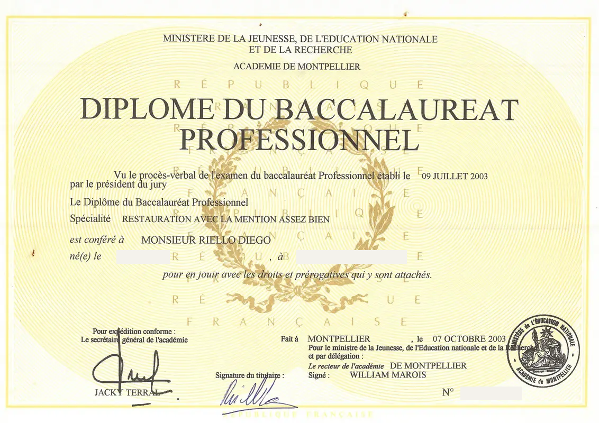
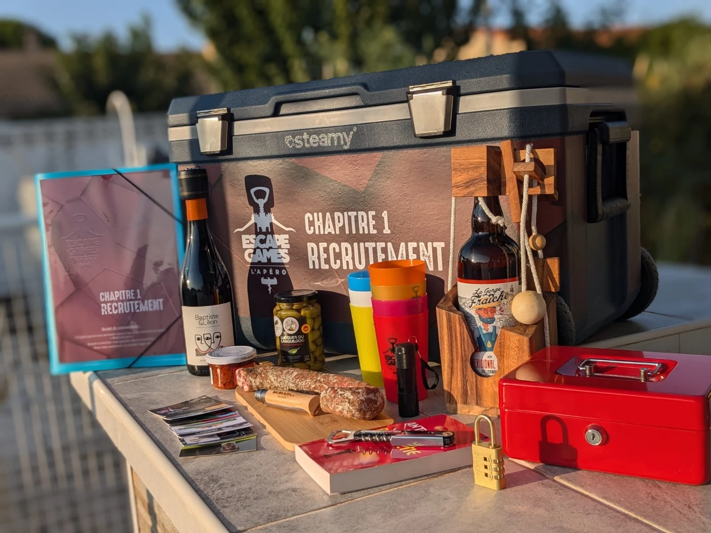
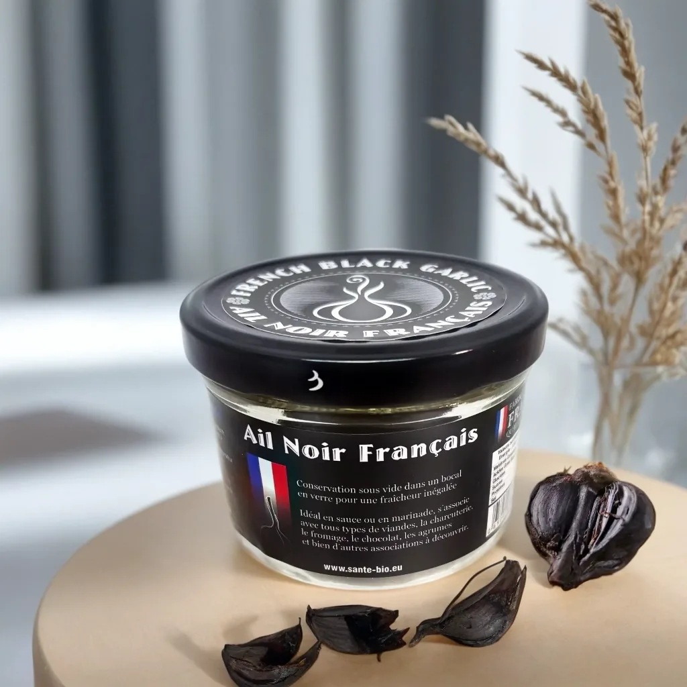

Production & service
- Chef de cuisine et responsable de production
- Organisation des services
- Productions en gros volumes
- Hygiène, sécurité et HACCP

Une expérience de terrain en restauration, en management et en gestion d’activité, enrichie par le développement web.
Mon parcours s’est construit au contact des clients et des équipes. Cuisinier de métier, j’ai développé une activité de traiteur et de chef à domicile, puis dirigé pendant sept ans le restaurant Les Comédiens à Béziers.
J’ai ensuite rejoint Lidl, où j’ai exercé comme chef caisse, puis adjoint manager. Accompagner les équipes, répartir le travail et suivre les priorités opérationnelles ont renforcé mon goût pour un management concret, fondé sur la présence et l’échange.
Titulaire du titre professionnel de Développeur Web et Web Mobile obtenu en juin 2026, j’ajoute aujourd’hui une dimension numérique à ce parcours. Je conçois des sites et des outils en m’appuyant sur ma connaissance du terrain, avec une attention particulière portée à leur utilité et à leur simplicité d’utilisation.
Ce bureau vous invite à découvrir mon parcours autrement. Cliquez sur les objets pour explorer mes compétences, consulter mon CV et mes diplômes, ou découvrir mes réalisations en cuisine, en management et dans le numérique. Chaque section apporte un éclairage concret sur mon expérience : à vous de choisir votre chemin.
Une expérience complète de la cuisine, de la production jusqu’au service.
Gestion d’établissement, organisation opérationnelle et animation d’équipes au service de la performance et de l’expérience client.
Les Comédiens
Gérant & chef de cuisine · 2012–2019
Direction du restaurant et de l’activité traiteur pendant sept ans. Management de cinq personnes : recrutement, formation, plannings et coordination des services. Gestion des achats, des fournisseurs et des prestations.
Lidl
Chef caisse / Adjoint manager · 2019–2025
Coordination d’équipes de cinq à dix personnes : organisation quotidienne, répartition des tâches, formation et gestion des priorités. Suivi des stocks, des indicateurs de performance et des standards de l’enseigne.
Calandretas Besierencas
Coprésident · 2017–2018
Prise de décisions. Relations publiques, recherche de partenaires et organisation d’événements. Coordination d’équipes entièrement bénévoles, principalement composées de parents d’élèves.
Stratégie, partenariats, logistique, expérience utilisateur et communication digitale.
Titre obtenu en juin 2026 à Béziers. Formation orientée vers la conception et le développement de sites et d’applications web.
Encadrement d’équipe, organisation, plannings et suivi des KPI.
Supervision, formation, coordination d’équipe et relation client.
Direction du restaurant et du service traiteur, achats, personnel et événements.
Menus sur mesure, prestations culinaires, conseil et cours de cuisine.
Création de cartes, ratios, qualité, brigade et sécurité alimentaire.
Développement et suivi d’un portefeuille de professionnels de la restauration.
Gestion du restaurant saisonnier, cuisine, achats et soirées à thème.
Table d’hôte, cuisine artisanale et rôtisserie à la cheminée.
La curiosité et le plaisir de créer m’accompagnent aussi au quotidien. En cuisine, derrière les platines, en voyage ou à travers mes projets de bricolage, j’aime explorer, expérimenter et apprendre.
J’aime improviser avec les ingrédients du moment, explorer les cuisines du monde, particulièrement asiatiques, et prendre le temps de pâtisser. Au fil des saisons, je me lance aussi de nouveaux défis culinaires.
Passionné de musique electronique et de djing. Entre 2004 et 2006, j’ai mixé à quelques reprises en boite de nuit, puis lors de quelques événements. Aujourd’hui, je mixe chez moi et entre amis, pour partager la musique et créer une ambiance.
J’aime voyager et découvrir d’autres cultures, avec un attachement particulier à Ibiza et aux Baléares. Du Canada à la Martinique, de la Norvège à Marrakech, ces découvertes s’accompagnent aussi de souvenirs gastronomiques. Les tables de Gilles Goujon, Nobu ou des frères Bonano font partie des expériences qui m’ont marqué.
J’aime rénover et réparer, comprendre comment les choses fonctionnent et trouver des solutions concrètes. Après les travaux réalisés dans mon restaurant Les Comédiens, j’ai entièrement refait ma cuisine en 2025 et, plus récemment, réparé mon sèche-linge. Le plaisir de faire soi-même et d’apprendre accompagne chacun de ces projets.
Conception d’interfaces, développement web et réalisation de projets concrets.
Développer l’activité commerciale avec les réseaux sociaux.
Certification Tosa WordPress.
Une formation à l’origine de mon expérience en cuisine, organisation et gestion d’activité.

Projet réalisé
Conception du site WordPress et pilotage de la communication numérique d’un concept d’escape game mobile.
Voir le projet
Projet réalisé
Site vitrine d’une marque d’ail noir français : produit, recettes et formulaire de contact. Réalisé et présenté devant un jury dans le cadre de mon titre professionnel DWWM.
HTML · CSS · JavaScript · Bootstrap
Voir le siteProjet en cours
Refonte du site du photographe Laurent Costa : valorisation de ses photographies de l’eau, organisation des contenus et accompagnement de sa communication numérique.
Voir le site actuel